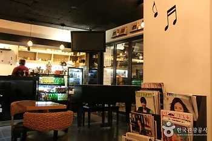
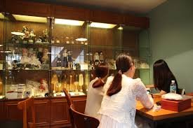
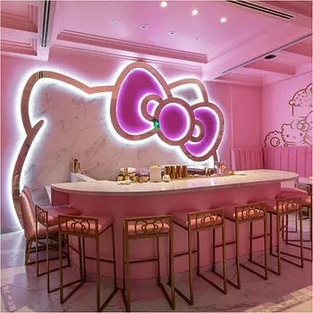

Turismo
O que Esperar do Turismo da Coreia?
A Coreia do Sul, um país onde a tradição se encontra com a modernidade. Se você busca uma experiência cultural rica, paisagens deslumbrantes e tecnologia de ponta, este é o lugar certo para você!
Hongdae a capital da cultura K-pop
Quer atrações para o dia e a noite? Então a região de Hongdae tem tudo o que você procura. Alegre, cheia de bares, locais para compras e também endereço do Trick Eye Museum – museu de ilusão mais famoso do destino –, Hongdae é um espetáculo à parte e conta com apresentações de rua megadivertidas. O público jovem é maioria – mesmo porque está bem perto da Hongik University – e, não à toa, é vista como um importante polo cultural e de lazer.

Além do Trick Eye Museum, Hongdae abriga o Love Museum e o Ice Museum, assim como várias opções de karaokês (ou noraebang, em coreano), cafés temáticos e uma rua com uma veia artística muito grande, repleta de murais, grafites e reflexões. E isso é só pra citar alguns exemplos, tá? Em outras palavras, Hongdae precisa, sim, estar na sua listinha de o que fazer em Seul.
A cultura jovem e a cena musical são destaque em Hongdae, que também abriga cafés temáticos e uma rica vida noturna com bares e discotecas. A área é famosa por sua arte de rua e cultura urbana, sendo um ponto imperdível para quem visita Seul.
Experimente os diversos cafés, restaurantes e boutiques da Hongdae Young Street durante o dia, e desfrute da animada vida noturna após o anoitecer. As apresentações musicais são um destaque especial (alô, kpopers!), e você pode provar pratos de diferentes países e culturas ao longo das ruas.
Templo de Bulguksa, Gyeongju
Nas proximidades da cidade de Gyeongju, fica um complexo budista construído no século VIII, durante a Dinastia de Silla, composto pelo Templo Bulguksa e pela Gruta Seokguram, ambos Património Mundial da UNESCO.
Bulguksa é um templo composto por vários edifícios de madeira sobre terraços de pedra granítica, onde se encontram sete tesouros nacionais da Coreia do Sul, incluindo os pagodes Dabotap e Seokgatap, as pontes Yeonhwagyo e Cheongungyo, a porta Anyangmun e duas estátuas de buda de bronze. O templo serviu como o centro do Budismo de Silla e era o principal local de oração para a proteção do país contra invasões estrangeiras.
Horário: Dias úteis: 09h00-17h30. Fins-de-semana e feriados: 08h00-17h30 / Aberto todo o ano;
Estacionamento: disponível;
Website:eng.bulguksa.or.kr
Cafeterias temáticas na Coreia do Sul
| PIANO CAFE (피아노 카페) | CAFE BLUE FAIRY |
|  |  |
| Um refúgio para os turistas de café e amantes da música é o Piano Cafe localizado em Hongdae.
Abrange um ambiente elegante cercado por tons de madeira que se contrastam com detalhes coloridos. Os visitantes são bem-vindas para tocar o piano localizado no café e mostrar as suas habilidades. |
Confesso que esse eu achei um pouco assustador. Esse café também localizado em Hongdae pode ser
considerado um pouco mórbido para alguns, mas se você é um colecionador ou apenas um entusiasta
de bonecas esse definitivamente é o seu café. O Café Blue Fairy tem centenas de bonecas expostas em suas vitrines, e sim você pode brincar com elas. Você pedirá seu pedido e pode se dirigir até uma das vitrines e pegar boneca,roupas e acessórios e se divertir. |
| HELLO KITTY CAFÉ | BAU HOUSE PUPPY CAFÉ |
|  |  | ]
| Esse aqui, sem dúvida alguma é a minha cara.Seu ambiente é todo em tons de rosa e branco e até
mesmo os pratos e cafés servidos vem em forma da gatinha icônica. Sua localização é bem ampla por Seul e você pode encontra um desses em Hongdae, Hyehwa, Shinchon e vários outros bairros ao longo de Seul. |
Ok. Esse também seria o meu ponto fraco. Localizado em Hongdae, nesse café você senta-se e junto
com o cardápio você recebe uma planilha com o nome de cada cachorro para poder se entrosar
melhor com os bichinhos. Você pode brincar, fazer carinho e por uma pequena taxa comprar petiscos para cães e então você será o centro das atenções dos bichinhos. |